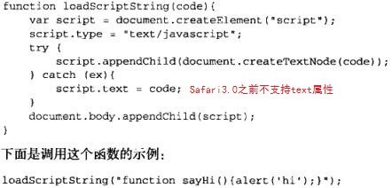
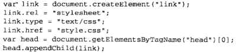
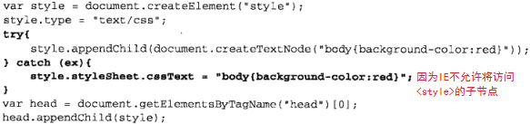
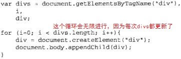

一、节点
DOM1中的Node接口在JavaScript中是作为Node类型实现的。每个节点都有一个nodeType属性，拥有表明节点的类型。
注意：Node类型一共有12种，任何节点必居其一：
| Node.ELEMENT_NODE（1） | Node.PROCESSING_INSTRUCTION_NODE（7） |
|---|---|
| Node.ATTRIBUTE_NODE（2） | Node.COMMENT_NODE（8） |
| Node.TEXT_NODE（3） | Node.DOCUMENT_NODE（9） |
| Node.CDATA_SECTION_NODE（4） | Node.DOCUMENT_TYPE_NODE（10） |
| Node.ENTITY_REFERENCE_NODE（5） | Node.DOCUMENT_FRAGMENT_NODE（11） |
| Node.ENTITY_NODE（6） | Node.NOTATION_NODE（12） |
1. Node总类
(1) nodeType
(2) nodeName、nodeValue
对于元素节点，name始终是标签名，value始终为null。
(3) childNodes
保存着一个NodeList对象（一种类数组），有length属性，用以保存一组有序节点。
注意：可以使用方括号或item()来访问各个子节点，例如：childNodes.item(0)。
(4) parentNode
(5) nextSibling、previousSibling
(6) lastChild、firstChild
(7) ownerDocument
该属性指向表示整个文档的文档节点。
(8) hasChildNodes()
(9) appendChild()、insertBefore()
appendChild()：接收1个参数：节点。返回该插入的节点。
insertBefore()：接收2个参数：节点、参照节点。返回该插入的节点。
(10) replaceChild()
接收2个参数：要插入的节点、要替换的节点。返回要替换的节点。
(11) removeChild()
接收1个参数：节点。返回该删除的节点。
(12) cloneNode()
接收1个参数：布尔，表示是否深复制。返回复制的节点（树）。
(13) normalize()
处理子节点中的文本节点，空文本节点则删除，相连文本节点则合并。
2. Document类型
通过Document类型可以取得与页面有关的信息，还能操作页面的外观及其底层结构。
- document对象是HTMLDocument（继承自Document类型）的一个实例，表示整个HTML页面。
- document对象是window对象的一个属性，可以全局访问。
| 特点 |
|---|
| nodeType = 9 |
| nodeName = ‘#document’ |
| nodeValue = null |
| parentNode = null |
| ownerDocument = null |
| 子节点可以是DocumentType、Element、ProcessingInstrument、Comment |
(1) documentElement
始终指向页面中的<html>元素。
(2) body、title（可设置）
指向页面中的<body>元素、<title>元素，修改title属性可以改变title元素里的内容。
(3) doctype
指向<!DOCTYPE>。（浏览器对doctype的支持差别很大）
(4) URL、domain（可设置）、referrer
页面完整的URL、页面的域名、链接到当前页面的那个页面的URL（若无则为空字符串）。
注意1：由于跨域限制，domain只可设为同域下的域名。如果页面有内嵌框架，内外框架的domain不同，其对象之间也不能通信。
注意2：如果domain一开始是松散的（wrox.com），则不能再设为紧绷的（p2p.wrox.com）。
(5) getElementById()、getElementsByTagName()
注意：可以通过方括号、item()、namedItem()来访问各个节点。
(6) getElementsByName()
注意：与getElementsByTagName()一样返回一个NodeList对象。
(7) 特殊集合
| document.anchors | 文档中所有带name特性的<a>元素 |
| document.applets | 文档中所有<applet>元素 |
| document.forms | 文档中所有<form>元素 |
| document.images | 文档中所有<img>元素 |
| document.links | 文档中所有带href特性的<a>元素 |
(8) document.implementation.hasFeature()
这个属性可以检测文档实现了哪些级别的DOM（1级2级3级）。属性中的hasFeature()方法接收2个参数：要检测的DOM功能名称、版本号。返回true或false。
(9) write()、writeln()、open()、close()
前两个方法用来将输出流写入到网页中。（writeln()会在字符串尾添加一个\n）
后两个方法用来打开或关闭输出流（若在页面加载期则不必用）。
注意：如果在页面加载结束后使用write()，则会重写整个页面。
3. Element类型
所有HTML元素都由HTMLElement类型表示（继承自Element类型），更细分来说，HTMLElement类型下面还有一些子类型，用来表示不同的标签类型。
| 特点 |
|---|
| nodeType = 1 |
| nodeName的值为元素的标签名 |
| nodeValue = null |
| parentNode可能是Document或Element |
| 子节点可以是Element、Text、Comment、ProcessingInstruction、CDATASection或EntityReference |
(1) tagName
和nodeName一样。在HTML中返回的标签名是大写的。
(2) 每个HTML元素都有的属性
| id | 同CSS的id值 |
| title | 有关元素的附加说明信息，一般通过工具提示条显示出来 |
| lang | 元素内容的语言代码，很少使用 |
| dir | 语言的方向，有ltr和rtl |
| className | 同CSS的class值 |
(3) getAttribute()、setAttribute()、removeAttribute()
用来操作元素特性。（一般比如id、title、className、style、onclick等）
注意：如果要创建自定义特性并赋值，则必须使用setAttribute()，不能直接div.mycolor=’red’。其它的原有特性则可以，比如div.id=’zjf’是可以的。
(4) attributes
attributes属性包含一个NamedNodeMap，与NodeList相似，也是动态集合。元素的每一个特性都由一个Attr节点表示，每个节点都保存在NamedNodeMap对象中。
(5) getNamedItem(name)、removeNamedItem(name)、setNamedItem(node)、item(pos)
attributes属性中包含一系列节点，每个节点的nodeName属性就是特性名称、nodeValue就是特性的值。以上这些方法主要用来获得、删除、设置元素的属性，也可以用来遍历（返回的顺序因浏览器而不同）。
注意：一般这几个方法没有(3)中的方法好用。
(6) document.createElement()
(7) childNodes
4. Text类型
文本节点由Text类型表示，包含的是可以照字面理解的纯文本内容。
注意1：如果标签中没有内容，则不存在文本节点，比如<div></div>。
注意2：被修改的文本节点会立即反映在页面上。
注意3：向文本节点中添加的文本会被自动转化为HTML编码（例如<会被转化为<）。
| 特点 |
|---|
| nodeType = 3 |
| nodeName = ‘#text’ |
| nodeValue为节点所包含文本 |
| parentNode是一个Element |
| 不支持子节点 |
(1) appendData(text)
将text添加到节点的末尾。
(2) deleteData(offset, count)、insertData(offset, text)、replaceData(offset, count, text)
从offset位置开始删除/插入/替换count个字符。
(3) splitText(offset)
从offset开始将文本分成两个文本节点，返回分割后的第二个节点。
(4) substringData(offset, count)
提取从offset开始的count个字符。
(5) length
节点中字符数目。
(6) document.createTextNode()
接收1个参数：要插入的节点字符串。
(7) normalize()
在一个包含两个及以上的文本节点的父节点上调用此方法，会将所有文本节点合并成一个节点。
5. Comment类型
| 特点 |
|---|
| nodeType = 8 |
| nodeName = ‘#comment’ |
| nodeValue值为注释的内容 |
| parentNode可能是Document或Element |
| 不支持子节点 |
Comment类型与Text类型继承自相同基类，因此它具有除splitText(offset)之外的所有字符串操作方法。
(1) document.createComment(text)
创建注释节点并传递注释文本。
6. CDATASection类型
| 特点 |
|---|
| nodeType = 4 |
| nodeName = ‘#cdata-section’ |
| nodeValue值为CDATA区域中的内容 |
| parentNode可能是Document或Element |
| 不支持子节点 |
CDATA区域只会出现在XML文档中，大多数浏览器会把CDATA区域错误地解析为Comment或Element。
(1) document.createCDataSection(text)
创建CDATA区域。
7. DocumentType类型
| 特点 |
|---|
| nodeType = 10 |
| nodeName为doctype的名称 |
| nodeValue = null |
| parentNode是Document |
| 不支持子节点 |
DocumentType对象保存在document.doctype中。
(1) name
文档类型名称，也就是出现在<!DOCTYPE之后的文本。
(2) entities（无用）
由文档类型描述的实体的NamedNodeMap对象。
(3) notations（无用）
由文档类型描述的符号的NamedNodeMap对象。
8. DocumentFragment类型
| 特点 |
|---|
| nodeType = 11 |
| nodeName = ‘#document-fragment’ |
| nodeValue = null |
| parentNode = null |
| 子节点可以是Element、Text、Comment、ProcessingInstruction、CDATASection或EntityReference |
所有节点类型中，只有这个没有对应的标记。
DocumentFragment继承了Node的所有方法，可以用于暂时存放想要插入的文档片段（之后可以一举插入真实文档中）。它不会像完整的文档那样占用额外的资源。
(1) document.createDocumentFragment()
9. Attr类型
| 特点 |
|---|
| nodeType = 2 |
| nodeName为特性的名称 |
| nodeValue为特性的值 |
| parentNode = null |
| 在HTML中不支持子节点，在XML中子节点可以是Text或EntityReference |
(1) name、value、specified
特性名称、特性值、用于表示特性是否已指定的布尔值。
(2) document.createAttribute()
接收1个参数：特性名称。创建新的特性节点。
(3) 将新特性添加到元素节点的方法
即元素的element.setAttributeNode()方法。
二、DOM操作技术
1. 动态脚本
静态脚本：script标签里面或script标签src引用。
动态脚本：在页面加载完毕后的某个时间加载的脚本。
(1) 方法

注意：实际上这样执行代码与在全局作用域中把相同的字符串传递给eval()是一样的。
2. 动态样式
静态样式：link标签或style标签。
动态脚本：在页面加载完毕后的某个时间加载的样式。
(1) 使用link的方法（异步的）

(2) 使用style的方法

注意：这种方式可以实时地看到页面变化。
3. 操作表格
可以使用<table>元素的属性和方法，通过DOM技术向页面中插入表格。
4. 使用NodeList
NodeList、NamedNodeMap、HTMLCollection，三者都是动态的。所有的NodeList对象都是在访问DOM文档时实时运行的查询，其内部的元素集合会随文档结构改变而更新。
所以，会存在下面的bug：

解决此bug的方法就是用一个变量存储原始的length。